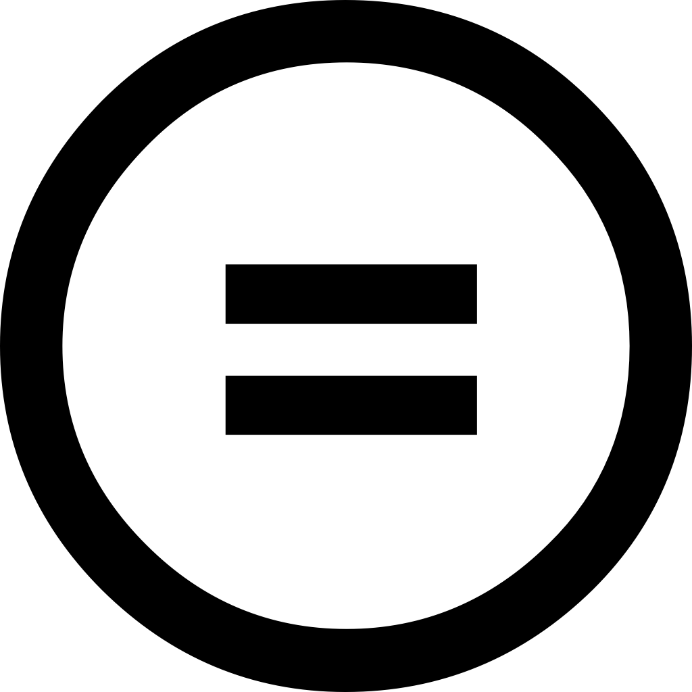
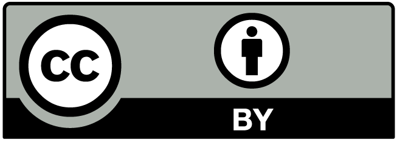
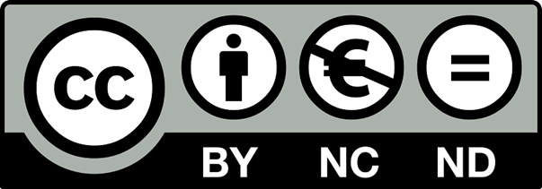
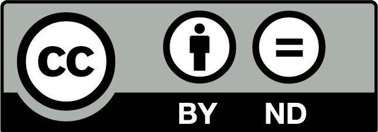

PROPIEDAD INTELECTUAL
Concepto
La propiedad intelectual es el conjunto de derechos que corresponden a los autores y a otros titulares (artistas, productores, organismos de radiodifusión...) respecto de las obras y prestaciones fruto de su creación
Derechos
Derechos Morales
La legislación española es claramente defensora de los derechos morales, reconocidos para los autores y para los artistas intérpretes o ejecutantes. Estos derechos son irrenunciables e inalienables, acompañan al autor o al artista intérprete o ejecutante durante toda su vida y a sus herederos o causahabientes al fallecimiento de aquellos. Entre ellos destaca el derecho al reconocimiento de la condición de autor de la obra o del reconocimiento del nombre del artista sobre sus interpretaciones o ejecuciones, y el de exigir el respeto a la integridad de la obra o actuación y la no alteración de las mismas.
Derechos de carácter patrimonial
Derechos ExclusivosSon aquellos que permiten a su titular autorizar o prohibir los actos de explotación de su obra o prestación protegida por el usuario, y a exigir de este una retribución a cambio de la autorización que le conceda.
Derechos de Remuneración
A diferencia de los derechos exclusivos, no facultan a su titular a autorizar o prohibir los actos de explotación de su obra o prestación protegida por el usuario, aunque sí obligan a este al pago de una cantidad dineraria por los actos de explotación que realice, cantidad esta que es determinada, bien por la ley o en su defecto por las tarifas generales de las entidades de gestión.
Derechos compensatorios
Como el derecho por copia privada que compensa los derechos de propiedad intelectual dejados de percibir por razón de las reproducciones de las obras o prestaciones protegidas para uso exclusivamente privado del copista.
Derechos de autor y copyright
Derechos de autorLos derechos de autor otorgan al propietario el derecho exclusivo sobre el uso de la obra, con algunas excepciones. Cuando alguien crea una obra original fija en un medio tangible, automáticamente se convierte en el propietario de los derechos de autor de dicha obra.
Copyright
Es una expresión de origen inglés cuyo significado es equivalente a derechos de autor. Se traduce, literalmente, como ‘derechos de copia’. Se refiere, por lo tanto, a los derechos que protegen la propiedad intelectual (artística o literaria), de un autor sobre la obra que ha creado. La condición de protección sobre una obra intelectual se expresa mediante el símbolo “©”.
Licencias de software
Concepto
Es un contrato entre el licenciante (autor/titular de los derechos de explotación/distribución) y
el licenciatario (usuario consumidor, profesional o empresa) del programa informático, para
utilizarlo cumpliendo una serie de términos y condiciones establecidas dentro de sus cláusulas,
es decir, es un conjunto de permisos que un desarrollador le puede otorgar a un usuario en los
que tiene la posibilidad de distribuir, usar o modificar el producto bajo una licencia
determinada. Además se suelen definir los plazos de duración, el territorio donde se aplica la
licencia.
Licencias Creative Commons
Concepto
Es una organización sin fines de lucro dedicada a promover el acceso y el intercambio de
cultura. Desarrolla un conjunto de instrumentos jurídicos de carácter gratuito que facilitan
usar y compartir tanto la creatividad como el conocimiento. Su sede central se encuentra
en Mountain View, en el estado de California, Estados Unidos.
Tipos de Licencias Creative Commons
Reconocimiento (Attribution)
En cualquier uso o explotación que se haga de la obra autorizada por la licencia Creative Commons hará falta reconocer siempre la autoría de dicha obra. En efecto, esta condición se exige en todas las licencias Creative Commons y no puede ser excluida por el autor, pues no olvidemos que el reconocimiento de la autoría es un derecho moral irrenunciable por parte del autor y todas las licencias deben respetarlo y aplicarlo siempre.
No Comercial (Non commercial)
Se prohíbe que la obra sea utilizada con fines comerciales (por ejemplo, el hilo musical en un negocio). Esta condición afecta al usuario, pero obviamente no afecta al autor que sigue siendo en todo momento propietario del copyright o derechos de autor; por tanto, esta condición no impide que al autor pueda comercializar con su obra.
Sin obras derivadas (No Derivate Works)
La autorización para explotar la obra no incluye la transformación para crear una obra derivada (por ejemplo, traducir una obra literaria).
Compartir Igual (Share alike)
La explotación autorizada incluye la creación de obras derivadas siempre que mantengan la misma licencia al ser divulgadas.

Licencias
Reconocimiento (by)
Esta licencia permite cualquier explotación de la obra, incluyendo una finalidad comercial, así como la creación de obras derivadas, la distribución de las cuales también está permitida sin ninguna restricción, con la única condición de que se haga referencia expresa al autor, es decir,que aparezca su nombre en cualquier uso o acto de explotación que se haga de la obra. Recordemos que la obligación de reconocimiento está presente en todas las licencias Creative Commons.

Reconocimiento - No Comercial (by-nc)
Esta licencia permite la generación de obras derivadas siempre que no se haga un uso comercial de las mismas. Tampoco se puede utilizar la obra original con finalidades comerciales.

Reconocimiento - No Comercial - Compartir Igual (by-nc-sa)
Esta licencia no permite un uso comercial de la obra original ni de las posibles obras derivadas. Además, la distribución de estas obras derivadas se debe hacer con una licencia igual a la que regula la obra original.

Reconocimiento - No Comercial - Sin Obra Derivada (by-nc-nd)
Esta licencia no permite la generación de obras derivadas ni hacer un uso comercial de la obra original, es decir, sólo son posibles los usos y finalidades que no tengan carácter comercial. Esta es la licencia Creative Commons más restrictiva.

Reconocimiento - Compartir Igual (by-sa)
Esta licencia permite el uso comercial de la obra y de las posibles obras derivadas, pero la distribución de éstas se debe hacer con una licencia igual a la que regula la obra original, es decir, la obra derivada que se lleve a cabo a partir de la obra original deberá ser explotada bajo la misma licencia

Reconocimiento - Sin Obra Derivada (by-nd)
Esta licencia permite el uso comercial de la obra pero no la generación de obras derivadas, es decir, que la obra sólo puede ser usada en su formato original, no cabe su transformación.

Copyleft
Concepto
El copyleft es un método general para liberar un programa u otro tipo de trabajo, que requiere
que todas las versiones modificadas y extendidas sean también libres.
La manera más simple de hacer que un programa sea software libre consiste en ponerlo en
el dominio público, sin copyright. Esto permite compartir el programa y sus mejoras a quienes
así lo deseen. Sin embargo, también posibilita que otra gente sin interés cooperativo convierta
el programa en software privativo. Pueden hacer cambios, muchos o pocos, y distribuir el
resultado como un producto privativo. Quienes reciban el programa modificado en esas
condiciones no podrán disfrutar de la libertad que el autor original les dio. El intermediario se la ha
arrebatado.